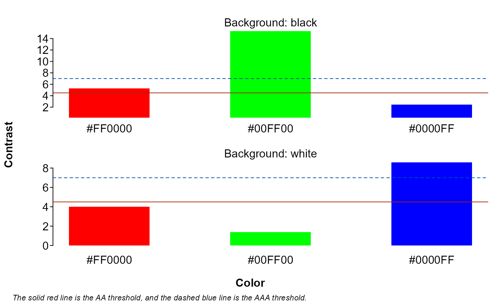
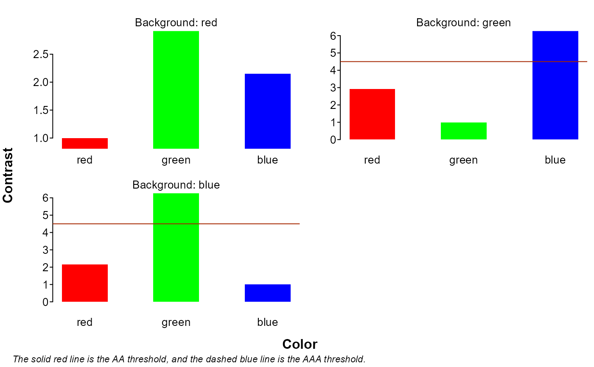
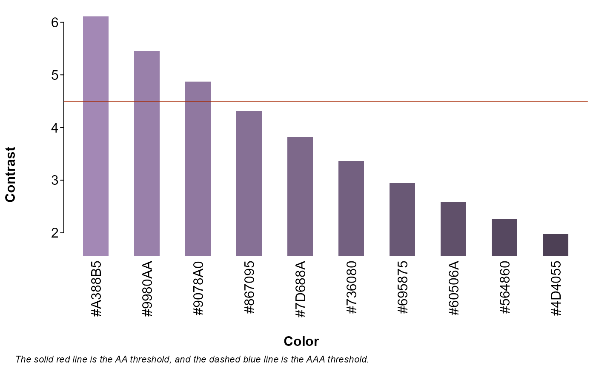

Calculates the color contrast ratio between two sets of colors, as defined by the World Wide Web Consortium.
Value
A list with entries for ratio (contrast ratio),
AA (ratios of at least 4.5), and AAA (ratios of at least 7).
Each entry contains a matrix with colors in rows and backgrounds in columns.
Examples
# check colors against dark and light backgrounds
splot.colorcontrast(c("#FF0000", "#00FF00", "#0000FF"), c("black", "white"))

#> $ratio
#> black white
#> #FF0000 5.252 3.998477
#> #00FF00 15.304 1.372190
#> #0000FF 2.444 8.592471
#>
#> $AA
#> black white
#> #FF0000 TRUE FALSE
#> #00FF00 TRUE FALSE
#> #0000FF FALSE TRUE
#>
#> $AAA
#> black white
#> #FF0000 FALSE FALSE
#> #00FF00 TRUE FALSE
#> #0000FF FALSE TRUE
#>
# check contrast between colors
splot.colorcontrast(c("red", "green", "blue"), c("red", "green", "blue"))

#> $ratio
#> red green blue
#> red 1.000000 2.913938 2.148936
#> green 2.913938 1.000000 6.261866
#> blue 2.148936 6.261866 1.000000
#>
#> $AA
#> red green blue
#> red FALSE FALSE FALSE
#> green FALSE FALSE TRUE
#> blue FALSE TRUE FALSE
#>
#> $AAA
#> red green blue
#> red FALSE FALSE FALSE
#> green FALSE FALSE FALSE
#> blue FALSE FALSE FALSE
#>
# see when shades of a color cross thresholds on a given background
splot.colorcontrast(splot.color(1:10, seed = "#a388b5"), "#101010")

#> $ratio
#> #101010
#> #A388B5 6.112743
#> #9980AA 5.457068
#> #9078A0 4.874875
#> #867095 4.317859
#> #7D688A 3.822943
#> #736080 3.365093
#> #695875 2.947918
#> #60506A 2.585055
#> #564860 2.257584
#> #4D4055 1.975381
#>
#> $AA
#> #101010
#> #A388B5 TRUE
#> #9980AA TRUE
#> #9078A0 TRUE
#> #867095 FALSE
#> #7D688A FALSE
#> #736080 FALSE
#> #695875 FALSE
#> #60506A FALSE
#> #564860 FALSE
#> #4D4055 FALSE
#>
#> $AAA
#> #101010
#> #A388B5 FALSE
#> #9980AA FALSE
#> #9078A0 FALSE
#> #867095 FALSE
#> #7D688A FALSE
#> #736080 FALSE
#> #695875 FALSE
#> #60506A FALSE
#> #564860 FALSE
#> #4D4055 FALSE
#>